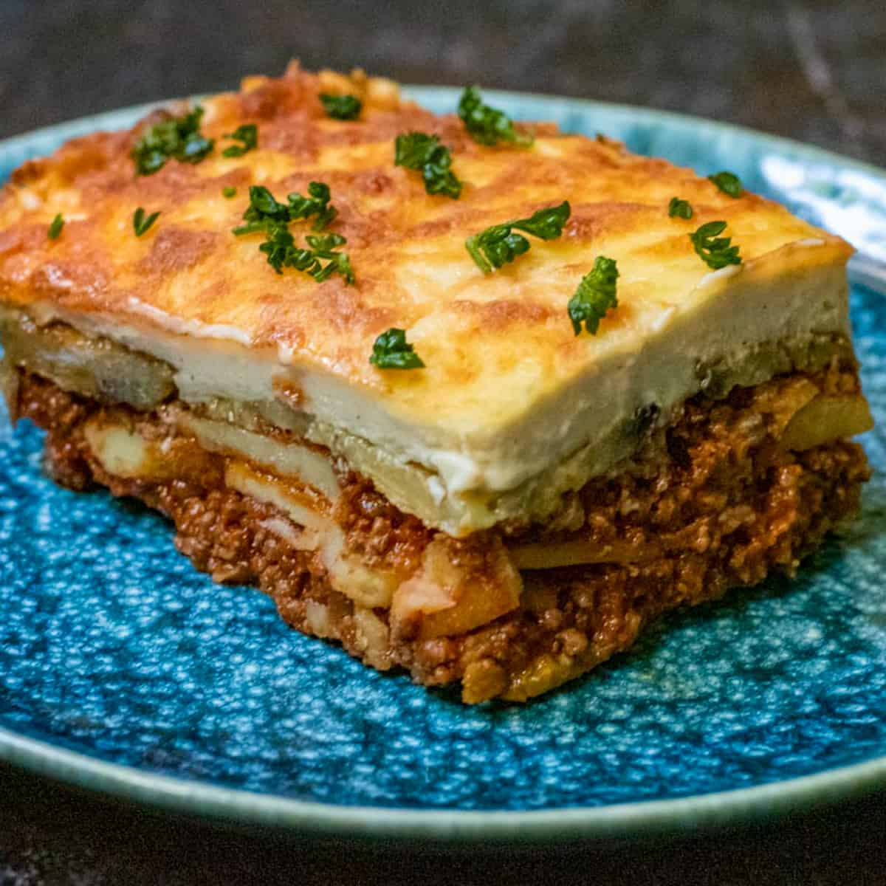

Back to home page
Panagyurski eggs Recipe

Recipe ingredients
This is a simple yet delicious recipe for bulgarian Musaka.
It's origins are from the Plovdiv region. It is best served with bulgarian yogurt!
Ingredients
- 0.5 kg mince meat
- 1kg potatos
- 2 eggs
Cooking steps
- cooking the mince
- the meat sauce, a rich Bolognese type sauce made with lamb or beef but with traditional Greek flavours of oregano and cinnamon;
- thick béchamel sauce - thicker than used in Lasagna and things like Broccoli Gratin, it's semi-set using eggs;